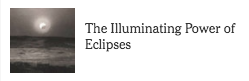
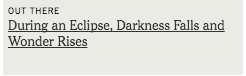

Some people scream. Some people cry.
Some do both.
The regular movements of the heavens are the oldest and deepest intimations of order in the universe. So it is hard, no matter how enlightened you consider yourself to be, not to feel a primordial lurch in your gut when the sun suddenly disappears from the sky.
On Aug. 21, the Great American Eclipse, as it has been branded by astronomers and trip promoters, will begin off the coast of Oregon and barrel across the country for an hour and a half before exiting off the coast of Charleston, S.C.
A total solar eclipse happens about twice a year somewhere on the globe, but this is the first time since 1918 that the continental United States has had an exclusive on the spectacle, one of the true rare treasures of nature.
Here’s our chance to see the shy corona, a pale sheath of energy the color of moonlight, wisping its tendrils into interplanetary space, and to stand in what feels like the Eye of Sauron as the winds rise, distant darkness spreads over the hills, and an eerie coolness invades the day.
About 100 million people live within a day’s drive of the path of totality, a band about 70 miles wide. The State of Oregon is treating the eclipse as a rehearsal for a future civil defense disaster, like an earthquake or a tsunami. If the forecasts are correct, many of us are likely to be viewing the eclipse from a traffic jam.
And that’s O.K. Just pull over, get out of the car and look around. An eclipse is the ultimate democratic experience. Permission is not required. As Bob Dylan once sang, “But for the sky there are no fences facing.”
You don’t need an astronomer to know whether the sun glows (or does not). Nor do you need any special equipment. If you don’t have those special eclipse sunglasses, make a pinhole camera with your fist and see an image of the sun on the ground as it is eaten away by the moon.
The whole show, for those privileged to make it to the hallowed ground, will last about two hours, from the time the moon first bites into the sun (“first contact,” in astronomical jargon) until the sun is finally whole again (“fourth contact”).
At first, nothing dramatic will happen. Half a sun, or even a quarter, is still daylight, after all. You won’t notice the sun shrinking unless you have special glasses or you’re carrying a pinhole camera.
If you are under a tree, the gaps between the leaves may serve as pinholes. When you look down, you may see the ground carpeted with crescent suns.
It’s when the crescent gets small that things start getting weird. Shadows sharpen drastically. The landscape is bathed in a melancholy banana light.
Then it all happens too fast. If you are in a high place looking west, you might see the moon’s shadow approaching. Regulus, the brightest star in Leo, will step out of a robe of sudden twilight over the sun’s shoulder. Mercury, Mars and Venus will pop out of the deepening gloom.
Here we’ll review what you need to know about eclipses, how to be safe during an eclipse and some fun experiments you can try during this rare event.
The last glimpse of sunlight as it disappears behind the moon looks like a diamond ring. And then, suddenly, the corona is there.
You always knew it was there, a hidden vibration in your soul, the intuition of something unseen, a mandala meaning whatever you want it to mean. But you couldn’t perceive it.
This moment — “second contact,” by the way — is a good time to scream.
I first experienced this weirdness between goal posts on a soccer field in Siberia in 1968, where a colleague and I had ventured to record an eclipse that lasted only 35 seconds.
We brought with us a camera from the esteemed Harvard astronomer Donald Menzel, who couldn’t make the trip. We recruited a Russian astronomer to run it.
Afterward, it was my job to deliver the film to Dr. Menzel’s graduate student, a young astronomer named Jay Pasachoff.
It began a long acquaintance with Dr. Pasachoff, now one of the leading eclipse astronomers in the world. The man is driven by the mystery of the corona, which is only a millionth as bright as the sun’s surface yet more than a million degrees hotter.
In 1983, a photographer and I crashed a National Science Foundation expedition to a place called Frog Point, on the island of Java, where Dr. Pasachoff’s team was set up to record an eclipse.
We had an excuse because a friend of mine, Dennis di Cicco, then an editor at Sky & Telescope and a renowned astrophotographer, had been summoned all the way from Cambridge, Mass., to bring Dr. Pasachoff an important filter.
The rain ceased the day before the eclipse, and we were still walking around on eclipse day with thick gobs of red mud clinging to our shoes and everything else. A little primordial ooze to go with the old primordial dread.
I’ve been clouded out twice on eclipse day. The first disappointment came at a campground on Prince Edward Island in 1972, where my special eclipse camera — two feet long and taking five-inch-wide film — mystified the other campgoers, who didn’t even realize an eclipse was coming.
Bad luck and clouds struck again in February 1979, in Goldendale, Wash., when, among other disasters, I drove into a ditch the night before the eclipse looking for the observatory.
But in La Paz, Baja California, in July 1991, totality lasted seven minutes — long enough for me to shoot an entire roll of film and drink a bottle of Corona, the eclipse beer of choice.
I was with Dr. Pasachoff again on the Greek island of Kastellorizo, just off the coast of Turkey, for the eclipse of March 29, 2006. That one, my seventh, is particularly special to me, because I was with my family.
When the eclipse ended, cruise ships in the harbor blew their horns and my 3-year-old daughter, Mira, danced in the reborn light of the sun.
Next week, we’ll be with Dr. Pasachoff again, in Salem, Ore., as the great darkening begins, communing with the essence of the cosmos. The universe itself is made mostly of shadows: of dark energy and dark matter, of black holes interspersed among the stars.
But we are children of the light, and when the light comes back, we’ll be dancing in it. That, by the way, is a fine time to cry.